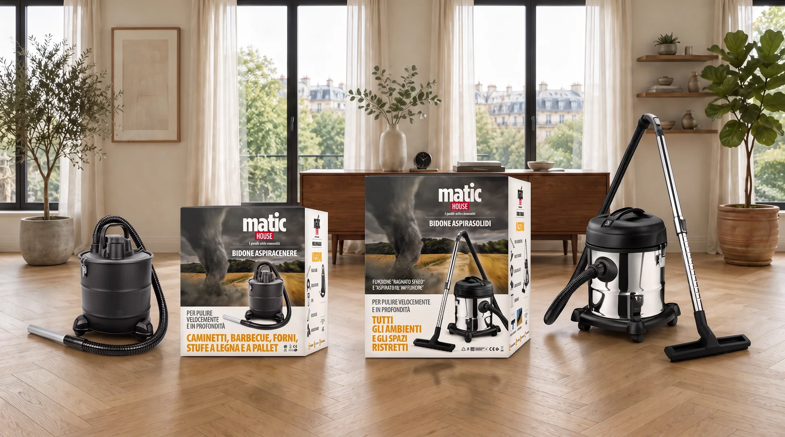
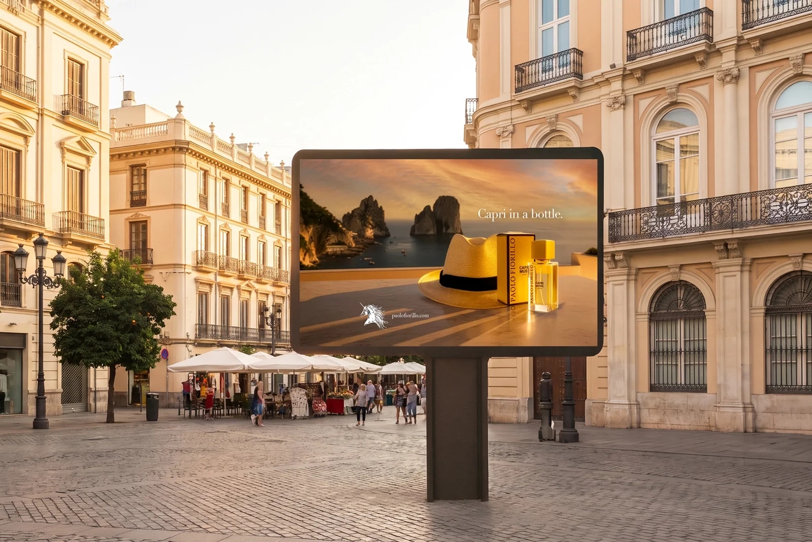
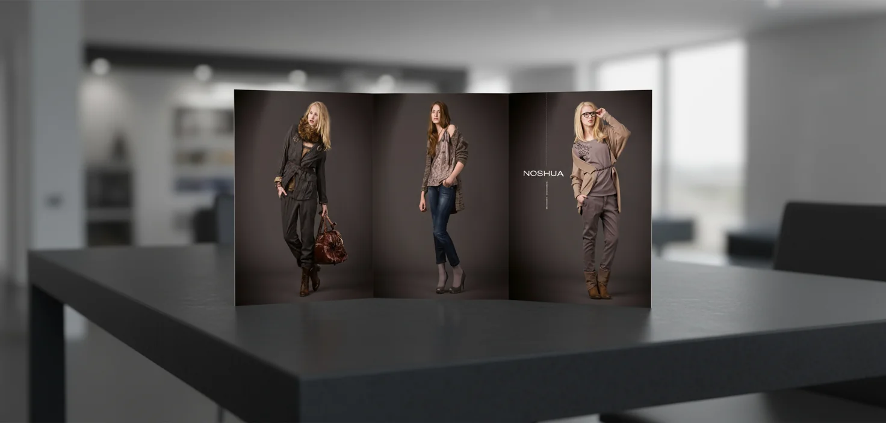
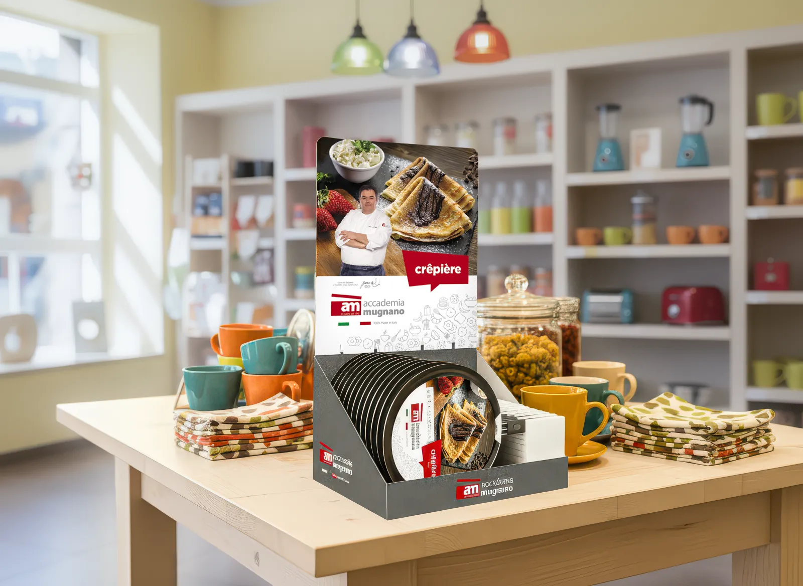
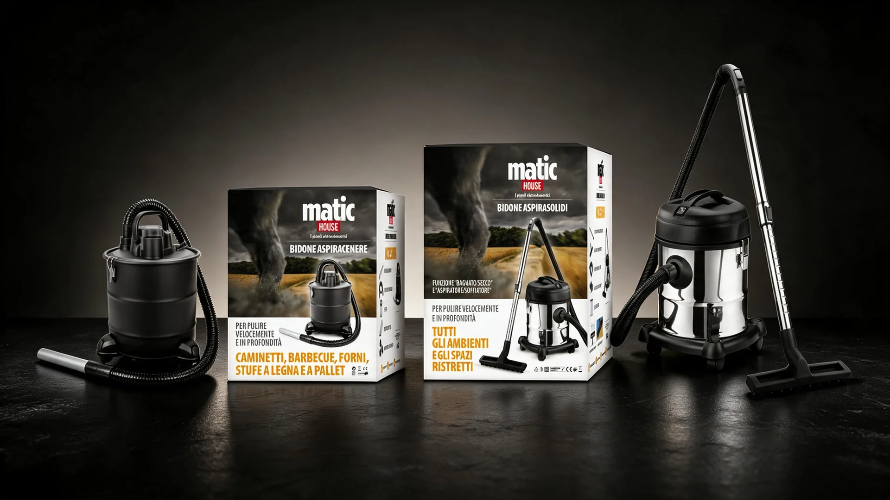

Matic House — Living Collection
Packaging design strutturale e visualizzazione 3D per la linea di aspiratori domestici Matic House. Studio della composizione ambientata in spazio living con armonia cromatica e luci naturali.

Packaging design strutturale e visualizzazione 3D per la linea di aspiratori domestici Matic House. Studio della composizione ambientata in spazio living con armonia cromatica e luci naturali.

Campagna outdoor per fragranza di lusso. Ambientazione evocativa che richiama i faraglioni di Capri, unendo eleganza sartoriale e atmosfere mediterranee.

Progettazione grafica per affissione grande formato 6x3 in contesto urbano. Food styling nitido e contrasto visivo ad elevata leggibilità.

Sviluppo di ecosistema digitale responsive. UI/UX design incentrato sull'immersività visiva, declinato con fluidità su tutti i dispositivi mobili e desktop.

Structural packaging design per calzature antinfortunistiche XTR. Razionalizzazione delle informazioni tecniche e forte impatto cromatico per distinguersi nel settore industriale.

Progettazione espositore da banco (POP) e visual merchandising per linea cottura. Gerarchia visiva focalizzata su testimonial ed esaltazione del prodotto gastronomico.

Render 3D di prodotto su stage scuro materico per la gamma Matic House. Studio del lighting design per valorizzare i dettagli in acciaio inox e il contrasto cromatico dei pack a scaffale.